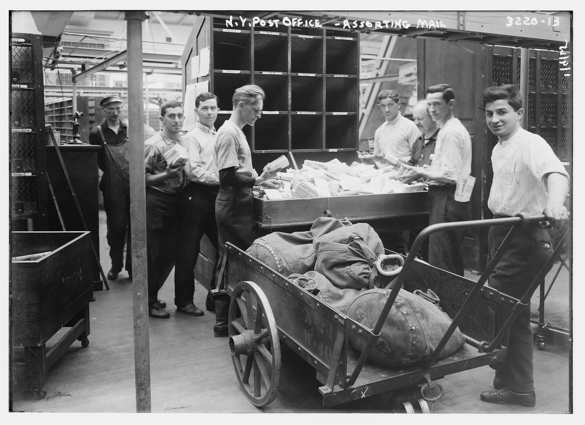
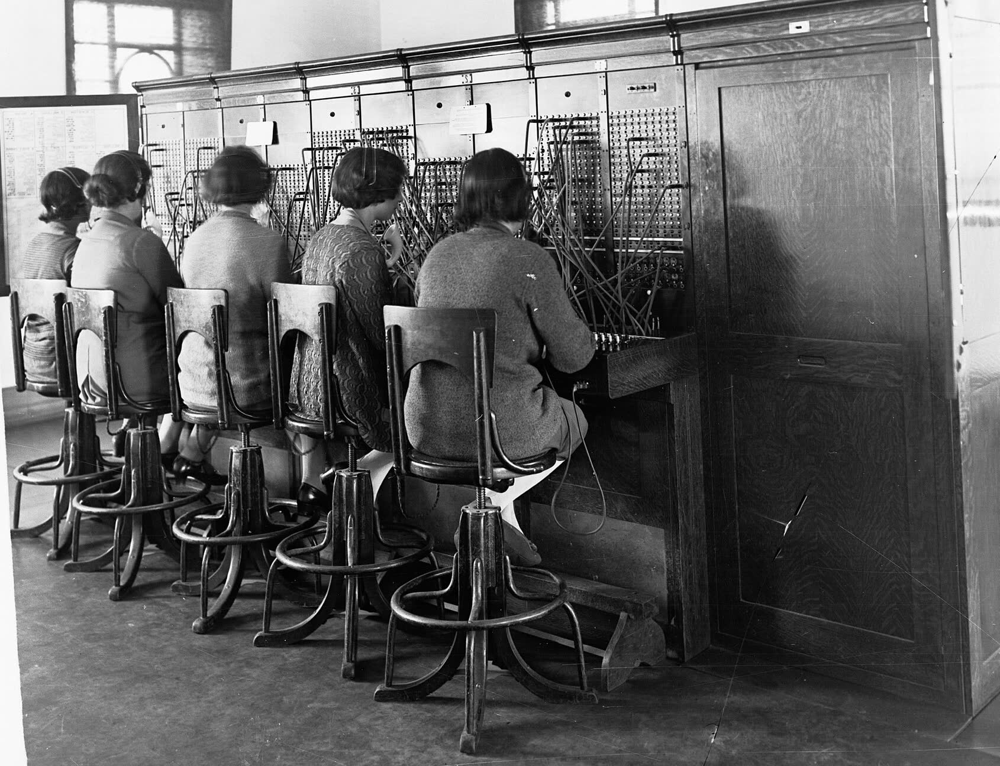
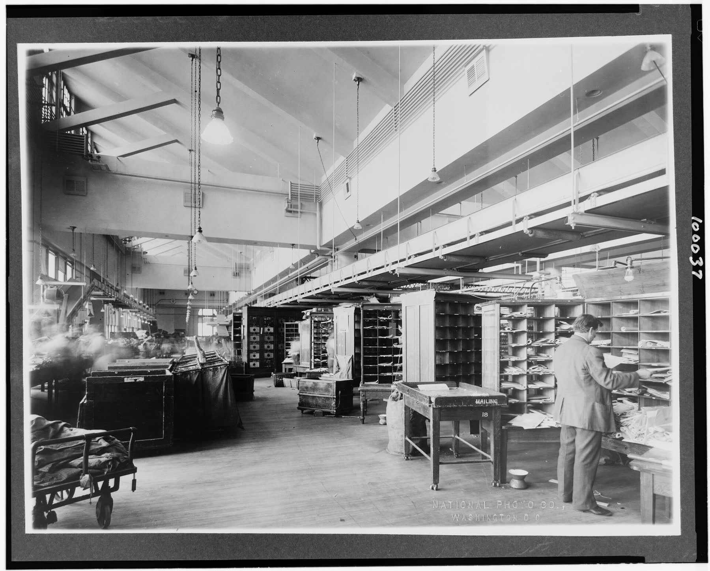

2026
자주 받는 질문
매일 하는 엑셀 정리, 대신 될까요?
네. 파일을 모으고 합치고 보고서로 만드는 일을 버튼 한 번으로 줄여 드립니다. 지금 쓰시는 엑셀 양식은 그대로 둡니다.
시세가 움직이면 바로 알 수 있나요?
정해 둔 조건이 되면 휴대폰으로 곧바로 알려 주는 프로그램을 만듭니다. 무엇을 지켜볼지는 함께 정하고, 사고팔라는 권유는 하지 않습니다.
영상을 매일 올리기가 벅차요.
자료 정리부터 영상 만들기, 예약 올리기까지 한 줄로 이어지게 만들어 손이 덜 가게 해 드립니다.
거래 장부를 한 화면에 모을 수 있나요?
거래 입력, 미수금, 세금계산서 발행 현황을 한 화면에 모은 관리 프로그램을 만들어 실제 회사에서 쓰고 있습니다.
휴대폰 앱처럼 쓰는 서비스도 되나요?
네. 설치 없이 홈 화면에 올려 쓰는 앱과 회원 관리까지 직접 만들어 운영하고 있습니다.
두 컴퓨터를 한 몸처럼 쓰고 싶어요.
두 컴퓨터 사이에 파일을 주고받고, 한쪽에서 다른 쪽 프로그램을 켜고 끄는 도구를 만들 수 있습니다.
이런 것도 프로그램으로 될까요?
한 줄이면 충분합니다. 될지, 어떻게 하면 될지부터 답해 드립니다. 아래 칸에 적어 카카오톡으로 보내 주세요.
만든 것
2026
영상 자동 제작과 예약 올리기
자료부터 발행까지2026
거래·세금계산서 관리
실제 회사에서 사용2026
방송 화면과 진행자
라이브 방송
2026
회원제 휴대폰 앱
설치 없이 홈 화면만드는 사람
- 이름
- 서교민
- 브랜드
- 파밍 · MINJINE
- 카카오톡 아이디
- mins8282
프로그램을 처음부터 끝까지 혼자 설계하고 만듭니다. 제가 쓰려고 만든 프로그램을 매일 돌리며 다듬어 왔고, 물어보시면 만든 사람이 직접 답합니다.
일하는 순서

묻고
하고 싶은 일을 카카오톡으로 한 줄 보내 주세요. 정리된 문서가 없어도 됩니다.
정하고
될지 안 될지, 어떻게 만들지, 언제까지 할지 먼저 말씀드립니다.
만들고
만드는 동안 중간 결과를 보여 드리고, 실제로 쓰실 컴퓨터에서 시험합니다.

건넵니다
쓰는 법과 함께 건네 드립니다. 쓰다가 막히면 다시 물어보세요.
제작 문의
하고 싶은 일을 한 줄로 적어 보내 주세요. 만든 사람이 직접 답합니다.
- 오픈채팅
- 카카오톡 오픈채팅방
- 카카오톡 아이디
- mins8282
보내기를 누르면 적은 글이 복사되고 카카오톡 오픈채팅이 열려요.
복사하고 카톡으로 보내기